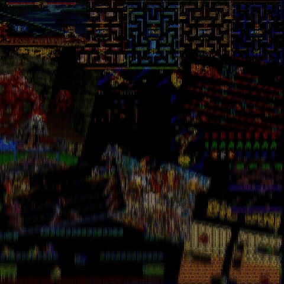

Dead Arcade

For this project, I wanted to create a collage that had all of my favorite video game classics I used to play in the laundromat. I made the collage in photoshop edited the contrasts in lightroom and then gave it an arcade effect in gyphy. Usually, as older an arcade system their screen projectors tend to dim and flicker. As that was the way the screen was in the arcade machine I used to play in. To a point where it finally gave out and they had to throw it out.